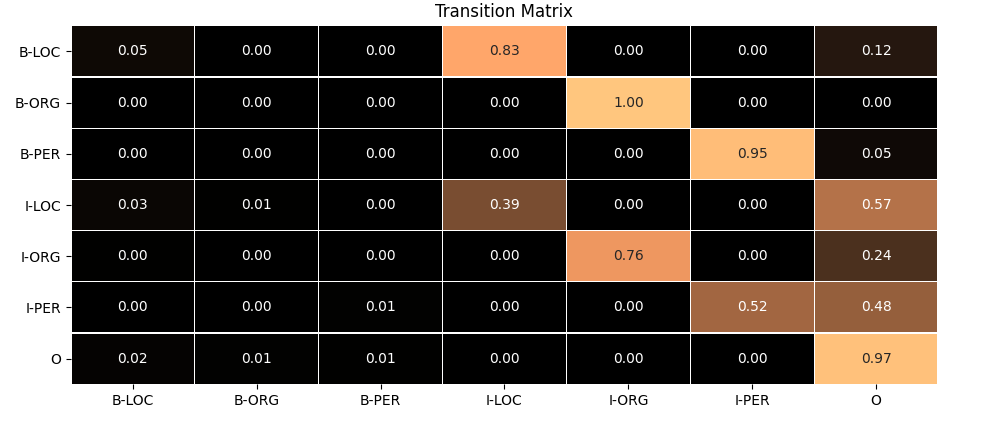

马尔可夫链及其Python实现（补充）
简单理解马尔可夫链，以及使用Python实现一下。
没有后效性的随机过程称为马尔科夫过程，时间和状态都是离散的马尔科夫过程称为马尔可夫链。
现实中，有很多变长的序列数据，如 DNA 链、股票价格、自然语言等，都可以通过随机变量序列来描述。即，
注意到，每个时刻 $X_{t}$ 都是一个随机变量，如何描述该随机变量与其过去历史状态的概率关系，
在很多场景中都很重要。马尔可夫链为该问题提供解决方案。
马尔可夫性假设
马尔可夫性假设，
满足该假设的马尔可夫链称为 1 阶马尔可夫链。容易推广到 n 阶马尔可夫链，
称为 n 价马尔可夫链，可以直观地理解为，未来的取值只依赖最近 n 个时间步的取值。这个思想类似于文本处理中的n-grams思想。
通常，$p(X_{0}) = \pi$ 称为初始状态分布。
1 阶马尔可夫链的示意图，

可以直观地理解为，未来的取值只依赖现在而与过去无关，换句话说，该过程的当前值就包含了对其未来做预测所需的全部信息。这个依赖不是确定性的，而是基于概率。
离散状态
当马尔可夫过程$\boldsymbol{X} = {X_{0},X_{1},X_{2},\dots,X_{t},\dots }$ 取值均为有限、离散情况马尔可夫链。假设 $X_{t}$ 的取值空间为${s_{1},s_{2},\dots,s_{n} }$，那么其状态转移概率可以表示为，
所有的状态转移情况构成矩阵P，
假设其初始状态分布为$\pi^{0} = [\pi(0), \dots, \pi(n-1)]^{\top}$，那么可以快速计算$t$时刻的状态分布，
$A^{k}$的计算也可以引入一定的技巧，对矩阵$A$进行SVD分解，
于是有，
也就有，
参数学习
马尔可夫链参数学习包括：
- 状态转移矩阵
- 初始状态分布
状态转移矩阵参数估计，$a_{ij} = P(i_{t+1} = q_{j}|i_{t}=q_{i})$，构成矩阵$A$，
其中$i,j$取值均在$[1, N]$范围内。满足，
也就是说矩阵的每一行的和为1。这里提供NER认为中，标签状态转移的可视化（更新），

初始状态$\pi = (\pi_{1}, \dots, \pi_{N})$，其中
即所有待学习样本的初始状态的概率。不过初始状态在这里用不上，在生成任务上才需要。
实现
给予Numpy的Python实现如下，
1 | import numpy as np |
详细代码后期更新到（补充）：hmm-ner-cws。
转载请包括本文地址：https://allenwind.github.io/blog/7163
更多文章请参考：https://allenwind.github.io/blog/archives/